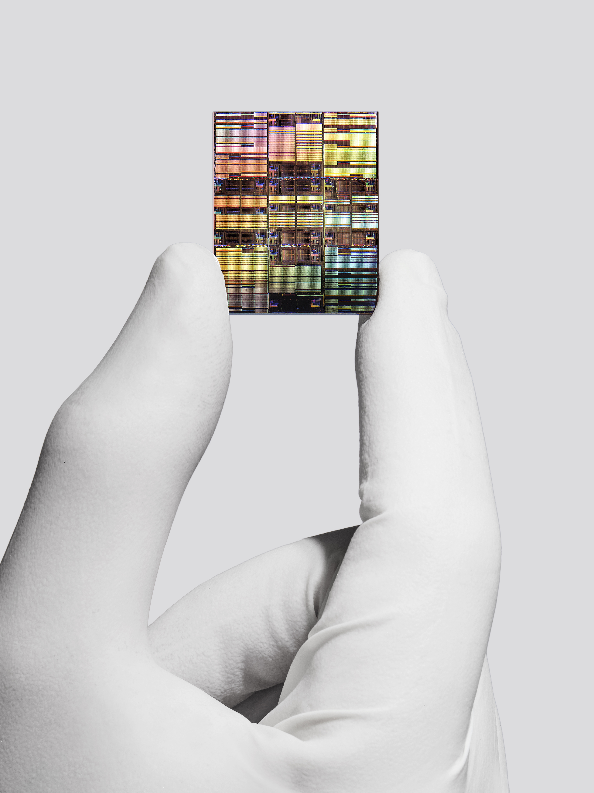

一、导语
2026 年 6 月 25 日，IBM 在纽约 Yorktown Heights 总部发布了全球首款亚1 纳米（nm）芯片技术，采用革命性的 「纳米堆叠」（Nanostack）3D 晶体管架构，工艺节点达到 0.7 nm（7 埃）。这意味着芯片行业的物理极限被再次推后，在传统摩尔定律濒临失效的时刻，IBM 展示了一条全新的技术路径。
这块指甲盖大小的芯片上集成了近 1000 亿颗 晶体管，密度几乎是 IBM 此前 2nm 芯片的两倍。更重要的是，IBM 公开承诺基于该技术至少可再支撑 十年 的持续迭代。
二、背景分析：为什么这很重要？
半导体行业正处于一个关键转折点。自 2021 年 IBM 发布 2nm 芯片以来，业界一直在逼近硅基晶体管的物理极限——当制程尺寸缩小到单个原子的尺度（约 0.5 nm），量子隧穿效应会导致传统晶体管无法正常工作。许多分析人士曾预测 1nm 就是硅基芯片的终点。
这场竞赛的背后是 AI 算力的爆炸式需求。OpenAI、Google、Anthropic 等公司的模型参数规模每 6-9 个月 翻一番，而芯片制程的进步速度已放缓至每 2-3 年 一代。IBM 的这一突破，意味着 AI 硬件基础设施的「天花板」被大幅抬高。
「IBM 的最新芯片突破标志着计算领域的一个里程碑时刻，将技术从纳米时代推向原子尺度。我们的纳米堆叠架构不只是制造更小的晶体管，而是重新发明芯片的构建方式。」
三、核心内容：纳米堆叠（Nanostack）技术详解
从纳米片到纳米堆叠
当前最先进的芯片架构是 纳米片（Nanosheet）晶体管，由 IBM 在 2017 年率先发明，被台积电、三星等厂商广泛采用。纳米堆叠在此基础上取得了两大突破：
- 真正的 3D 晶体管布局：传统的纳米片在同一平面排列，而纳米堆叠将晶体管 垂直堆叠并错位排列，在同样的平面面积上容纳了 2 倍 的晶体管
- 多层不同材料：每个堆叠层可以使用不同的材料组合，分别优化性能和功耗。例如在高性能层使用锗化硅（SiGe），在节能层使用纯硅
实测数据
IBM 在 VLSI 2026 国际会议上公布了首批实验验证结果：
- 通过 超薄介质键合（Ultra-thin Dielectric Bonding） 实现了 CMOS 集成，堆叠层之间的电学连接质量达到量产标准
- 展示了 双沟道工程（Dual-channel Engineering）能力，每个堆叠层可独立优化
- 功能型 CMOS 反相器以 预期开关性能 运行，证明纳米堆叠架构可物理构建并支持真实计算
- SRAM 缩放性能提升 40%，这对 AI 工作负载至关重要——因为大模型推理高度依赖片上缓存

规格对比：从 2nm 到 0.7nm
IBM 同时公布了与自家 2nm 芯片的对比数据：
- 性能：在同等功耗下性能提升 50%
- 能效：在同等性能下功耗降低 70%
- 晶体管密度：从 2nm 的约 500 亿颗/cm² 提升至约 1000 亿颗/cm²
- 预计量产时间：5 年内（最早 2031 年）
四、各方反应
这一消息发布后，在芯片和 AI 行业引发了广泛反响。
半导体分析机构 SemiAnalysis 发表评论称，纳米堆叠架构「代表了自 FinFET 以来晶体管设计最根本的变革」，并指出「如果 IBM 能将这一架构授权给代工厂，其影响力将不亚于 ARM 在移动芯片领域的颠覆」。
竞争对手动态：台积电目前已在 3nm 和 2nm 节点大规模量产，预计 2027 年进入 1.4nm 节点；三星正在研发 1nm 以下 Gate-All-Around 技术；Intel 则押注 RibbonFET 和 PowerVia 背面供电。IBM 的纳米堆叠路径在垂直集成维度上领先于所有竞争对手。
AI 行业视角：NVIDIA 在声明中表示「欢迎任何能提升 AI 推理能效的基础创新」，并特别关注纳米堆叠在 SRAM 方面的 40% 提升，因为大模型推理性能直接受限于内存带宽和缓存容量。
「IBM 的 0.7nm 芯片在 SRAM 缩放上的突破值得高度关注。对于 LLM 推理来说，缓存就是一切。一次 40% 的 SRAM 效率提升，意味着模型响应速度可以实现质的飞跃。」
政策层面：美国政府 CHIPS Act 办公室对这一成果表示赞赏，称其「证明了美国在半导体基础研究上的领导地位」。IBM 与合作伙伴在纽约州奥尔巴尼的领先半导体研究设施是 CHIPS Act 重点支持的项目之一，该设施刚刚安装了 ASML 的 High NA EUV 光刻机——这是实现 0.7nm 级精密电路印刷的关键设备。
五、深度解读
对 AI 算力的影响
当前前沿 AI 模型的训练成本已经突破 10 亿美元 量级，推理成本也在指数级增长。IBM 的 0.7nm 芯片如果如期量产，将直接降低每个 token 的推理成本约 50-70%。这意味着更便宜的 ChatGPT 订阅、更长的 Codex 对话、更快的 Gemini 响应——以及更重要的是，原本因算力成本过高而无法商业化的 AI 应用（如实时视频理解、长时间 Agent 对话）将变得可行。
从芯片到量产的鸿沟
需要注意的是，实验室突破到大规模量产之间仍有巨大距离。IBM 预计量产还需 5 年，主要是因为纳米堆叠需要全新的制造工艺：超薄介质键合、多层材料沉积、3D 连接布线等环节都尚未建立成熟的产业链。但 IBM 已明确表态，不计划自建晶圆厂，而是寻求与台积电、三星等代工厂进行技术授权合作。
摩尔定律的「第二春」
纳米堆叠架构最重要的意义，在于它提出了一个不同于传统微缩的演进路径——在 2D 平面无法继续收缩时，向 垂直方向扩展。这意味着摩尔定律可能从「每 18 个月晶体管翻倍」转变为「每 18 个月计算密度翻倍」，形式不同，但效果类似。IBM 明确表示，纳米堆叠可支撑 至少十年 的未来迭代。
六、总结
IBM 的 0.7nm 纳米堆叠芯片不仅是一项技术突破，更是对整个半导体行业发出的信号：摩尔定律并未终结，只是换了一种方式继续前进。对于 AI 行业而言，这意味着一场算力供给侧的长期利好——更小的制程 = 更便宜的推理 = 更广泛的应用 = 更快速的创新。从今天算起，如果一切顺利，2031 年 前后搭载 0.7nm 芯片的 AI 服务器将投入运营，那将是又一个算力爆炸的起点。